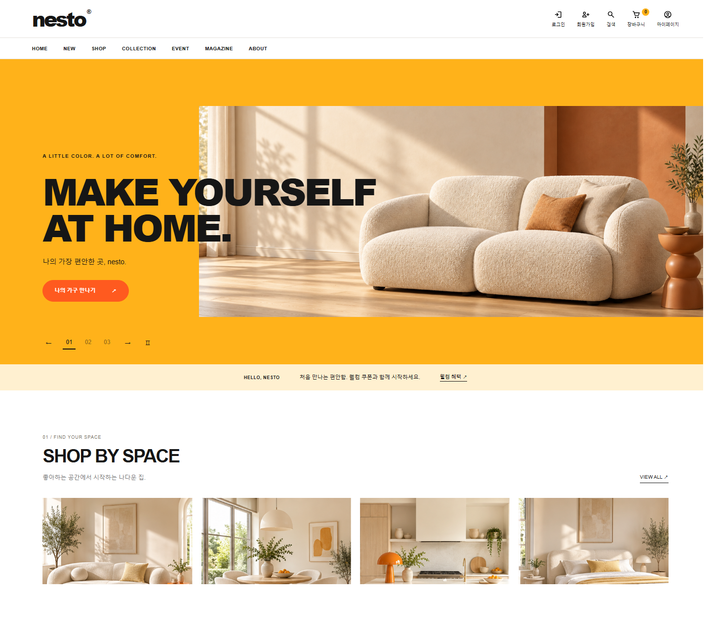
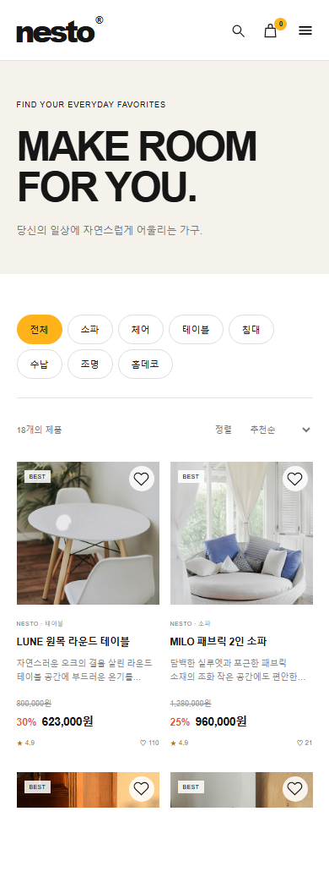

오렌지는 기억을 위해
브랜드는 기억되되 제품 색은 왜곡되지 않도록, 오렌지는 첫인상과 행동 버튼에만 쓰고 상품 주변에는 화이트와 크림을 남겼습니다.
FURNITURE & LIFESTYLE / WEB DESIGN
크림색 가구를 넓게 보여 주고 오렌지는 필요한 곳에만 사용해,
제품을 찾는 흐름에 밝은 리듬을 더했습니다.


01 / PROJECT INTENT
가구 쇼핑몰은 분위기를 보여 주는 일과 제품을 빠르게 비교하게 하는 일이 함께 필요합니다. 그래서 메인에서는 공간의 감정을 충분히 보여 주되, 목록과 상세로 갈수록 색과 장식을 줄였습니다. 기존의 메인 → 상품 목록 → 상품 상세 흐름은 익숙함을 위해 유지하고, 각 단계에서 사용자가 결정해야 하는 정보만 더 선명하게 보이도록 순서를 다시 잡았습니다.
브랜드는 기억되되 제품 색은 왜곡되지 않도록, 오렌지는 첫인상과 행동 버튼에만 쓰고 상품 주변에는 화이트와 크림을 남겼습니다.
크림색 가구, 밝은 우드, 자연광을 공통 기준으로 정해 서로 다른 제품도 한 집의 장면처럼 이어지게 했습니다.
공간의 분위기는 큰 이미지로, 비교가 필요한 제품은 같은 크기의 카드로 보여 줘 탐색 목적에 따라 시선의 속도를 조절했습니다.
02 / VISUAL RATIONALE
밝은 인상은 유지하되 제품의 색과 형태가 묻히지 않도록,
강한 색은 브랜드를 기억시키거나 다음 행동을 알려야 하는 위치에만 사용했습니다.
HEADLINE / BOLD SANS SERIF
MAKE YOURSELF큰 제목은 짧게 두어 사용자가 섹션의 주제를 스크롤 중에도 바로 파악하게 했습니다.
BODY / KOREAN SANS SERIF
제품명·가격·설명이 한 덩어리로 보이지 않도록
본문의 크기는 낮추고 행간과 정보 사이 간격을 넓혔습니다.
03 / IMAGE DIRECTION
거실, 다이닝, 디테일 이미지에 자연광과 밝은 우드를 반복해
페이지를 이동해도 색감이 갑자기 달라지지 않도록 했습니다.
NESTO의 이미지 방향을 확인하기 위해 제작한 AI 생성 콘셉트 이미지입니다.
04 / LAYOUT · RESPONSIVE · INTERACTION
화면 전환은 메인, 목록, 상세의 정보 순서를 한자리에서 비교하기 위해 넣었습니다.
기기 크기를 바꾸면 각 화면에서 남긴 요소와 줄인 요소도 확인할 수 있습니다.
PC · 큰 공간 이미지에서 제품 탐색으로 이어지는 메인 화면
넓은 화면에서는 소파와 공간을 크게 보여 주고, 다음 섹션부터 공간별 탐색이 이어지도록 순서를 잡았습니다.
제품 사진 아래에는 이름과 가격만 남기고 카드 사이를 띄워, 여러 제품을 볼 때 시선이 분산되지 않게 했습니다.
제품 사진과 정보 영역을 나누고, 제품명 → 가격 → 옵션 → 수량 순서로 선택 내용을 정리했습니다.
05 / RETROSPECTIVE · EXPECTED EXPERIENCE
색을 많이 쓰기보다 오렌지가 필요한 위치를 먼저 골랐습니다.
공간 이미지는 크게 보여 주되, 상품 목록에서는 정보가 먼저 읽히도록 장식을 줄였습니다.
PC 구성을 그대로 축소하지 않고 작은 화면에서는 카드 수와 여백, 정보 순서를 다시 맞췄습니다.
최종적으로는 밝고 편안한 브랜드 인상을 느낀 사용자가 공간을 둘러보듯 제품을 탐색하고, 상세 정보와 구매 단계까지 부담 없이 이동하도록 의도했습니다.
이번 작업을 통해 분위기와 제품 탐색을 함께 살리려면 무엇을 더할지보다 무엇을 덜어낼지 정하는 과정이 중요하다는 점을 배웠습니다.